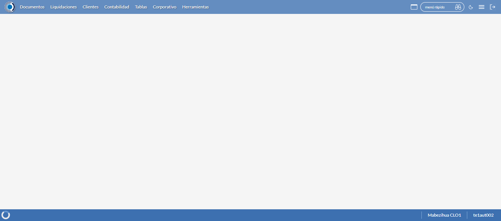
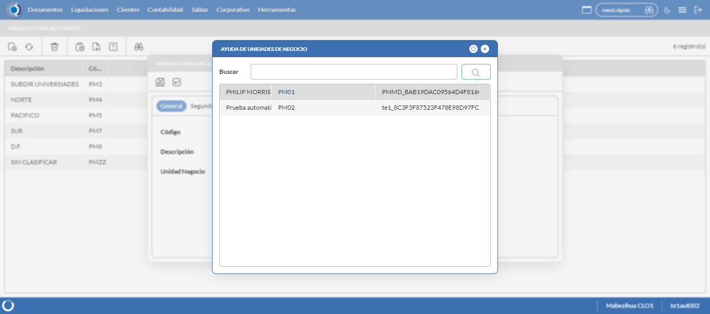
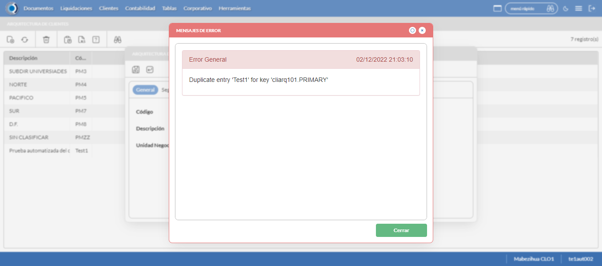
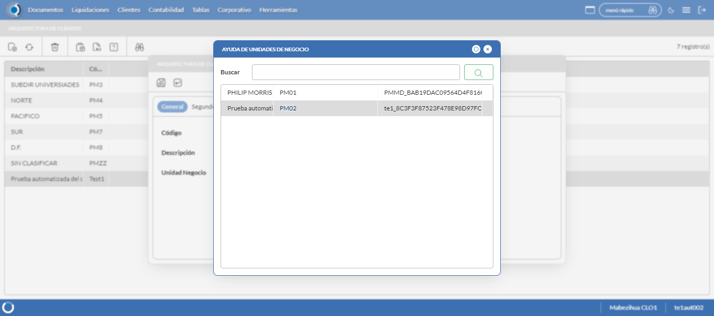
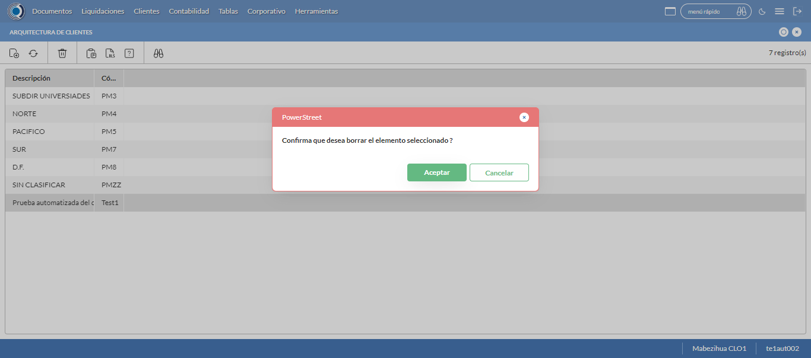

Desarrollado por : Area de Testing PWST
Fecha y hora de inicio : 2022-12-02 15:02:41
Duracion : 0:01:09.877186
Resultado : Total 8，Correctos 7 ，Errores 1 ，Taza de resultado 87.50%
Resumen 87.50% Errores 1 Fallidos 0 Correctos 7 Test realizados 8
| Caso de Prueba | Total | Correctos | Fallido | Error | Detalles | Captura del error |
| ArqCliente.Test: Escenario 1 de Arquitectura Cliente | 8 | 7 | 0 | 1 | Detalles | |
test |
ft1_1: 2022-12-02 15:02:42,501 - root - INFO - Se abre el chrome
2022-12-02 15:02:43,706 - root - INFO - Entra a la URL
2022-12-02 15:02:43,827 - root - INFO - Maximiza la pantalla
Traceback (most recent call last):
File "C:\Users\gerar\AppData\Local\Programs\Python\Python311\Lib\site-packages\selenium\webdriver\remote\switch_to.py", line 88, in frame
frame_reference = self._driver.find_element(By.ID, frame_reference)
^^^^^^^^^^^^^^^^^^^^^^^^^^^^^^^^^^^^^^^^^^^^^^^^^
File "C:\Users\gerar\AppData\Local\Programs\Python\Python311\Lib\site-packages\selenium\webdriver\remote\webdriver.py", line 861, in find_element
return self.execute(Command.FIND_ELEMENT, {"using": by, "value": value})["value"]
^^^^^^^^^^^^^^^^^^^^^^^^^^^^^^^^^^^^^^^^^^^^^^^^^^^^^^^^^^^^^^^^^
File "C:\Users\gerar\AppData\Local\Programs\Python\Python311\Lib\site-packages\selenium\webdriver\remote\webdriver.py", line 444, in execute
self.error_handler.check_response(response)
File "C:\Users\gerar\AppData\Local\Programs\Python\Python311\Lib\site-packages\selenium\webdriver\remote\errorhandler.py", line 249, in check_response
raise exception_class(message, screen, stacktrace)
selenium.common.exceptions.NoSuchElementException: Message: no such element: Unable to locate element: {"method":"css selector","selector":"[id="mainFrame"]"}
(Session info: chrome=108.0.5359.72)
Stacktrace:
Backtrace:
(No symbol) [0x00FEF243]
(No symbol) [0x00F77FD1]
(No symbol) [0x00E6D04D]
(No symbol) [0x00E9C0B0]
(No symbol) [0x00E9C22B]
(No symbol) [0x00ECE612]
(No symbol) [0x00EB85D4]
(No symbol) [0x00ECC9EB]
(No symbol) [0x00EB8386]
(No symbol) [0x00E9163C]
(No symbol) [0x00E9269D]
GetHandleVerifier [0x01289A22+2655074]
GetHandleVerifier [0x0127CA24+2601828]
GetHandleVerifier [0x01098C0A+619850]
GetHandleVerifier [0x01097830+614768]
(No symbol) [0x00F805FC]
(No symbol) [0x00F85968]
(No symbol) [0x00F85A55]
(No symbol) [0x00F9051B]
BaseThreadInitThunk [0x76866739+25]
RtlGetFullPathName_UEx [0x77D98AFF+1215]
RtlGetFullPathName_UEx [0x77D98ACD+1165]
During handling of the above exception, another exception occurred:
Traceback (most recent call last):
File "C:\Users\gerar\AppData\Local\Programs\Python\Python311\Lib\site-packages\selenium\webdriver\remote\switch_to.py", line 91, in frame
frame_reference = self._driver.find_element(By.NAME, frame_reference)
^^^^^^^^^^^^^^^^^^^^^^^^^^^^^^^^^^^^^^^^^^^^^^^^^^^
File "C:\Users\gerar\AppData\Local\Programs\Python\Python311\Lib\site-packages\selenium\webdriver\remote\webdriver.py", line 861, in find_element
return self.execute(Command.FIND_ELEMENT, {"using": by, "value": value})["value"]
^^^^^^^^^^^^^^^^^^^^^^^^^^^^^^^^^^^^^^^^^^^^^^^^^^^^^^^^^^^^^^^^^
File "C:\Users\gerar\AppData\Local\Programs\Python\Python311\Lib\site-packages\selenium\webdriver\remote\webdriver.py", line 444, in execute
self.error_handler.check_response(response)
File "C:\Users\gerar\AppData\Local\Programs\Python\Python311\Lib\site-packages\selenium\webdriver\remote\errorhandler.py", line 249, in check_response
raise exception_class(message, screen, stacktrace)
selenium.common.exceptions.NoSuchElementException: Message: no such element: Unable to locate element: {"method":"css selector","selector":"[name="mainFrame"]"}
(Session info: chrome=108.0.5359.72)
Stacktrace:
Backtrace:
(No symbol) [0x00FEF243]
(No symbol) [0x00F77FD1]
(No symbol) [0x00E6D04D]
(No symbol) [0x00E9C0B0]
(No symbol) [0x00E9C22B]
(No symbol) [0x00ECE612]
(No symbol) [0x00EB85D4]
(No symbol) [0x00ECC9EB]
(No symbol) [0x00EB8386]
(No symbol) [0x00E9163C]
(No symbol) [0x00E9269D]
GetHandleVerifier [0x01289A22+2655074]
GetHandleVerifier [0x0127CA24+2601828]
GetHandleVerifier [0x01098C0A+619850]
GetHandleVerifier [0x01097830+614768]
(No symbol) [0x00F805FC]
(No symbol) [0x00F85968]
(No symbol) [0x00F85A55]
(No symbol) [0x00F9051B]
BaseThreadInitThunk [0x76866739+25]
RtlGetFullPathName_UEx [0x77D98AFF+1215]
RtlGetFullPathName_UEx [0x77D98ACD+1165]
During handling of the above exception, another exception occurred:
Traceback (most recent call last):
File "C:\xampp\htdocs\versiones\automatizaciones\AutoPWST\01ARC\testCase\ArqCliente.py", line 31, in test
self.driver.switch_to.frame("mainFrame")
File "C:\Users\gerar\AppData\Local\Programs\Python\Python311\Lib\site-packages\selenium\webdriver\remote\switch_to.py", line 93, in frame
raise NoSuchFrameException(frame_reference)
selenium.common.exceptions.NoSuchFrameException: Message: mainFrame
|
|
||||
test_000: Ingresa a la base de datos |
pt1_2: 2022-12-02 15:02:46,902 - root - INFO - Escribe el usuario
2022-12-02 15:02:46,966 - root - INFO - Escribe la contraseña
2022-12-02 15:02:47,019 - root - INFO - Se dio clic en el boton ingresar
2022-12-02 15:02:48,227 - root - INFO - Ejecutar Enterprise
2022-12-02 15:02:52,267 - root - INFO - Cambia entre pestañas
|
|
||||
test_001: Abre menu y ejecuta pantalla |
pt1_3: 2022-12-02 15:02:57,887 - root - INFO - Abre la pantalla de Arquitectura de CLiente
2022-12-02 15:02:57,898 - root - INFO - Captura: C:\xampp\htdocs\versiones\automatizaciones\AutoPWST\01ARC\report\img screen：20221202_15_02_57.png
2022-12-02 15:02:58,546 - root - INFO - La pantalla ejecutada es Tipos de Cliente
2022-12-02 15:02:58,600 - root - INFO - Se presiona el boton 'Nuevo', para crear un nuevo registro.
|
 | ||||
test_002: Abre la ventana de nuevo y crear un registro |
pt1_4: 2022-12-02 15:02:59,142 - root - INFO - Se abrio la pantalla para el ingreso de un registro nuevo.
2022-12-02 15:02:59,197 - root - INFO - Ingresa el codigo del nuevo registro
2022-12-02 15:02:59,267 - root - INFO - Ingresa el codigo alternativo del nuevo registro
2022-12-02 15:02:59,414 - root - INFO - Ingresa la descripción del nuevo registro
2022-12-02 15:03:00,325 - root - INFO - Captura: C:\xampp\htdocs\versiones\automatizaciones\AutoPWST\01ARC\report\img screen：20221202_15_03_00.png
2022-12-02 15:03:00,640 - root - INFO - Se hace el cambio de pestaña para continuar con el registro nuevo
2022-12-02 15:03:01,238 - root - INFO - Se presiona el boton de segundo nivel 'Nuevo', para crear un nuevo registro.
2022-12-02 15:03:01,805 - root - INFO - Ingresa el codigo del nuevo registro en segundo nivel
2022-12-02 15:03:01,888 - root - INFO - Ingresa el codigo alternativo del nuevo registro en segundo nivel
2022-12-02 15:03:02,018 - root - INFO - Ingresa la descripción del nuevo registro del segundo nivel
2022-12-02 15:03:02,059 - root - INFO - Se hace el cambio de pestaña para continuar con el registro nuevo
2022-12-02 15:03:02,649 - root - INFO - Se presiona el boton 'Nuevo' de tercer nivel, para crear un nuevo registro.
2022-12-02 15:03:03,232 - root - INFO - Ingresa el codigo del nuevo registro en tercer nivel
2022-12-02 15:03:03,325 - root - INFO - Ingresa el codigo alternativo del nuevo registro en tercer nivel
2022-12-02 15:03:03,465 - root - INFO - Ingresa la descripción del nuevo registro del tercer nivel
2022-12-02 15:03:03,509 - root - INFO - Se hace el cambio de pestaña para continuar con el registro nuevo
2022-12-02 15:03:04,105 - root - INFO - Se presiona el boton 'Nuevo' de cuarto nivel, para crear un nuevo registro.
2022-12-02 15:03:04,705 - root - INFO - Ingresa el codigo del nuevo registro en cuarto nivel
2022-12-02 15:03:04,815 - root - INFO - Ingresa el codigo alternativo del nuevo registro en cuarto nivel
2022-12-02 15:03:04,943 - root - INFO - Ingresa la descripción del nuevo registro del cuarto nivel
2022-12-02 15:03:05,005 - root - INFO - Se da clic en el boton Guardar de cuarto nivel; se debe crear un nuevo registro.
2022-12-02 15:03:05,387 - root - INFO - Se da clic en el boton Guardar de tercer nivel; se debe crear un nuevo registro.
2022-12-02 15:03:05,690 - root - INFO - Se da clic en el boton Guardar de segundo nivel; se debe crear un nuevo registro.
2022-12-02 15:03:05,978 - root - INFO - Se da clic en el boton Guardar; se debe crear un nuevo registro.
|
 | ||||
test_003: Repetir el registro creado anteriormente |
pt1_5: 2022-12-02 15:03:06,288 - root - INFO - Se presiona el boton 'Refrescar', para crear un nuevo registro igual al anterior.
2022-12-02 15:03:08,346 - root - INFO - Se presiona el boton 'Nuevo', para crear un nuevo registro igual al anterior.
2022-12-02 15:03:08,893 - root - INFO - Se abrio la pantalla para el ingreso de un registro nuevo.
2022-12-02 15:03:08,945 - root - INFO - Ingresa el codigo del nuevo registro
2022-12-02 15:03:09,016 - root - INFO - Ingresa el codigo alternativo del nuevo registro
2022-12-02 15:03:09,133 - root - INFO - Ingresa la descripción del nuevo registro
2022-12-02 15:03:10,703 - root - INFO - Se da clic en el boton Guardar; se debe crear un nuevo registro.
2022-12-02 15:03:12,704 - root - INFO - Captura: C:\xampp\htdocs\versiones\automatizaciones\AutoPWST\01ARC\report\img screen：20221202_15_03_12.png
2022-12-02 15:03:12,884 - root - INFO - Se presiona el boton 'Cerrar', para cerrar el mensaje de duplicidad de llave primaria
2022-12-02 15:03:13,251 - root - INFO - Se presiona el boton 'Cerrar', para cerrar la ventana
|
 | ||||
test_004: Modificar el registro |
pt1_6: 2022-12-02 15:03:13,487 - root - INFO - Se presiona el boton 'Refrescar', para crear un nuevo registro igual al anterior.
2022-12-02 15:03:16,069 - root - INFO - Se da clic en el registro creado, para proceder a modificarlo.
2022-12-02 15:03:16,703 - root - INFO - Ingresa el codigo alternativo del nuevo registro
2022-12-02 15:03:16,839 - root - INFO - Ingresa la descripción del nuevo registro
2022-12-02 15:03:17,726 - root - INFO - Se da doble click en el registro de Unidad Negocio.
2022-12-02 15:03:17,728 - root - INFO - Captura: C:\xampp\htdocs\versiones\automatizaciones\AutoPWST\01ARC\report\img screen：20221202_15_03_17.png
2022-12-02 15:03:18,049 - root - INFO - Se hace el cambio de pestaña para continuar con el registro nuevo
2022-12-02 15:03:19,150 - root - INFO - Se da clic en el registro de segundo nivel creado, para proceder a modificarlo.
2022-12-02 15:03:19,775 - root - INFO - Ingresa el codigo alternativo del registro modificado en segundo nivel
2022-12-02 15:03:19,931 - root - INFO - Ingresa la descripción del registro modificado del segundo nivel
2022-12-02 15:03:19,977 - root - INFO - Se hace el cambio de pestaña para continuar con el registro nuevo
2022-12-02 15:03:21,086 - root - INFO - Se da clic en el registro de tercer nivel creado, para proceder a modificarlo.
2022-12-02 15:03:21,721 - root - INFO - Ingresa el codigo alternativo del registro modificado en tercer nivel
2022-12-02 15:03:21,899 - root - INFO - Ingresa la descripción del registro modificado del tercer nivel
2022-12-02 15:03:21,940 - root - INFO - Se hace el cambio de pestaña para continuar con el registro nuevo
2022-12-02 15:03:23,085 - root - INFO - Se da clic en el registro de cuarto nivel creado, para proceder a modificarlo.
2022-12-02 15:03:23,731 - root - INFO - Ingresa el codigo alternativo del nuevo registro en cuarto nivel
2022-12-02 15:03:23,899 - root - INFO - Ingresa la descripción del nuevo registro del cuarto nivel
2022-12-02 15:03:23,947 - root - INFO - Se da clic en el boton Guardar de cuarto nivel; se debe crear un nuevo registro.
2022-12-02 15:03:24,347 - root - INFO - Se da clic en el boton Guardar de tercer nivel; se debe crear un nuevo registro.
2022-12-02 15:03:24,679 - root - INFO - Se da clic en el boton Guardar de segundo nivel; se debe crear un nuevo registro.
2022-12-02 15:03:24,941 - root - INFO - Se da clic en el boton Guardar; se debe crear un nuevo registro.
|
 | ||||
test_005: Eliminar el registro creado |
pt1_7: 2022-12-02 15:03:25,256 - root - INFO - Se presiona el boton 'Refrescar', para proceder a eliminar el registro.
2022-12-02 15:03:27,837 - root - INFO - Se da clic en el registro creado, para proceder a eliminarlo.
2022-12-02 15:03:28,403 - root - INFO - Se hace el cambio de pestaña para continuar con el registro nuevo
2022-12-02 15:03:29,491 - root - INFO - Se da clic en el registro de segundo nivel creado, para proceder a eliminarlo.
2022-12-02 15:03:30,061 - root - INFO - Se hace el cambio de pestaña para continuar con el registro nuevo
2022-12-02 15:03:31,173 - root - INFO - Se da clic en el registro de tercer nivel creado, para proceder a eliminarlo.
2022-12-02 15:03:31,725 - root - INFO - Se hace el cambio de pestaña para continuar con el registro nuevo
2022-12-02 15:03:32,812 - root - INFO - Se da clic en el registro de cuarto nivel creado, para proceder a eliminarlo.
2022-12-02 15:03:32,879 - root - INFO - Se presiona el boton 'Eliminar' de cuarto nivel, para eliminar el registro.
2022-12-02 15:03:33,095 - root - INFO - Se da clic en el boton Guardar de tercer nivel; se debe crear un nuevo registro.
2022-12-02 15:03:33,964 - root - INFO - Se da clic en el boton Guardar de segundo nivel; se debe crear un nuevo registro.
2022-12-02 15:03:34,548 - root - INFO - Se da clic en el boton Guardar; se debe crear un nuevo registro.
2022-12-02 15:03:35,153 - root - INFO - Se da clic en el registro creado, para proceder a eliminarlo.
2022-12-02 15:03:35,723 - root - INFO - Se hace el cambio de pestaña para continuar con el registro nuevo
2022-12-02 15:03:36,827 - root - INFO - Se da clic en el registro de segundo nivel creado, para proceder a eliminarlo.
2022-12-02 15:03:37,397 - root - INFO - Se hace el cambio de pestaña para continuar con el registro nuevo
2022-12-02 15:03:38,483 - root - INFO - Se da clic en el registro de tercer nivel creado, para proceder a eliminarlo.
2022-12-02 15:03:38,545 - root - INFO - Se presiona el boton 'Eliminar' de tercer nivel, para eliminar el registro.
2022-12-02 15:03:38,714 - root - INFO - Se da clic en el boton Guardar de segundo nivel; se debe crear un nuevo registro.
2022-12-02 15:03:39,000 - root - INFO - Se da clic en el boton Guardar; se debe crear un nuevo registro.
2022-12-02 15:03:39,589 - root - INFO - Se da clic en el registro creado, para proceder a eliminarlo.
2022-12-02 15:03:40,158 - root - INFO - Se hace el cambio de pestaña para continuar con el registro nuevo
2022-12-02 15:03:41,243 - root - INFO - Se da clic en el registro de segundo nivel creado, para proceder a eliminarlo.
2022-12-02 15:03:41,300 - root - INFO - Se presiona el boton 'Eliminar' de segundo nivel, para eliminar el registro.
2022-12-02 15:03:41,968 - root - INFO - Se da clic en el boton Guardar; se debe crear un nuevo registro.
2022-12-02 15:03:42,538 - root - INFO - Se da clic en el registro creado, para proceder a eliminarlo.
2022-12-02 15:03:42,590 - root - INFO - Se presiona el boton 'Eliminar', para eliminar el registro.
2022-12-02 15:03:44,591 - root - INFO - Captura: C:\xampp\htdocs\versiones\automatizaciones\AutoPWST\01ARC\report\img screen：20221202_15_03_44.png
2022-12-02 15:03:44,728 - root - INFO - Se confirma el eliminado del registro
2022-12-02 15:03:44,955 - root - INFO - Se presiona el boton 'Refrescar', para crear un nuevo registro igual al anterior.
2022-12-02 15:03:47,030 - root - INFO - Se presiona el boton 'Cerrar', para cerrar la pantalla de Categorias Fiscales.
|
 | ||||
test_006: Cerrar_Navegador |
pt1_8: 2022-12-02 15:03:51,227 - root - INFO - Se cierra chrome
|
|
||||
| Caso de prueba | 8 | 7 | 0 | 1 | Taza de resultado：87.50% | |